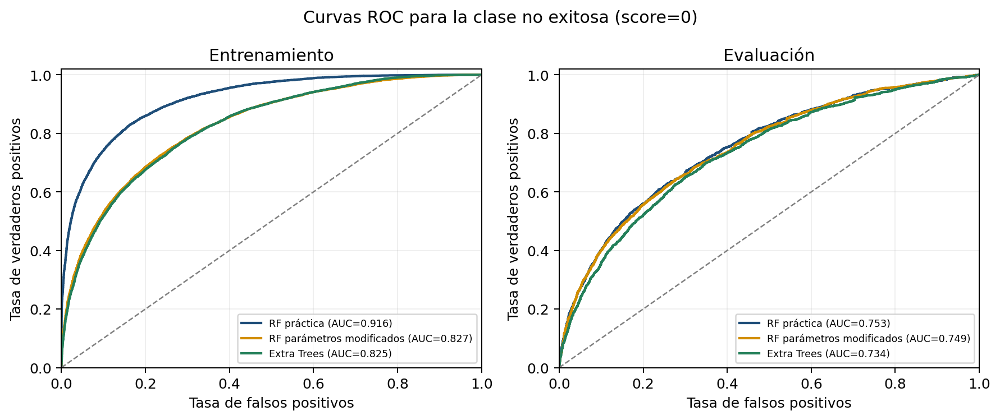

Repaso guiado del caso ASSISTments, los notebooks, los datos y la comparación de modelos. Preparada para preguntas individuales de la profesora.
La web es una guía de estudio. El modelo corre en los notebooks; aquí no se ejecutan predicciones.
CASO DE ESTUDIO
Predicción de resultados
ASSISTments · 2023 data
RF baseRF modificadoExtra Trees
ANTES DE VER LOS RESULTADOS
RF y Extra Trees: mismo objetivo, distinta aleatoriedad
La comparación usa los mismos datos y particiones; cambia cómo se construyen los árboles.
RF base y Extra Trees usan 600 árboles, profundidad 19, mínimo 10 para dividir, mínimo 2 por grupo final, sqrt y bootstrap=True. Extra Trees prueba cortes al azar. El RF modificado conserva Random Forest, pero usa profundidad 12, mínimo 20 para dividir y mínimo 5 por grupo final.
LO QUE PIDE LA PROFESORA
La respuesta debe volver al código
ENSAYO RÁPIDO
Preguntas para repasar
Repasa preguntas técnicas sobre el caso, los datos, las tres notebooks, las métricas y los gráficos.
0preguntas marcadas como repasadas
Primera idea para abrir:“Predecimos el resultado de cada problema final con variables de las prácticas previas; comparamos tres modelos sobre los mismos datos.”
01 / EXPLICACIÓN EN ORDEN
Ruta guiada de defensa
Sigue el hilo del problema hasta la propuesta. Cada paso incluye qué decir, qué mostrar y dónde encontrarlo.
08 pasos
Paso 1 de 8
02 / INSPECCIÓN EN VIVO
De archivos crudos a una fila modelable
Si la profesora pide abrir un CSV, explica primero qué representa y luego qué cambió al prepararlo.
CSV × 2
ANTES DE TRANSFORMAR
Varios archivos, una función por archivo
Los datos están distribuidos en archivos con claves que permiten unir resultados finales y actividad previa.
CSV crudo: disponible en el proyecto local
Archivo
Qué aporta
Qué enseñar
Cabecera real del archivo de puntajes
assignment_log_idproblem_idscore[ID oculto][ID oculto]0 o 1
Los identificadores se ocultan en esta vista. En evaluation, el código intenta completar score desde unit_test_scores.csv cuando está disponible.
DESPUÉS DE PREPARAR
Una tabla de 727 columnas
La primera fila conserva etiqueta y rastreo; los predictores agregan práctica, tutoría, secuencia, problema y vector de texto ya disponible.
CSV procesado: disponible en el proyecto local
51 042filas
3 000estudiantes
727columnas totales
722predictores
CABECERAS PARA SEÑALAR
El CSV preparado assistments_rf_dataset.csv.gz se genera localmente al ejecutar el notebook de preparación; no se incluye en el sitio.
Respuesta corta: los archivos crudos registran partes del proceso; el CSV preparado deja una fila por problema final y las variables numéricas que consume el modelo.
03 / CUADERNO INTERACTIVO
Recorrido guiado del código
Elige un notebook y avanza por sus etapas. Cada etapa muestra qué entra, qué hace el código, qué produce y abre el bloque fuente relacionado.
Entrada → proceso → transformación → modelado → salida
Abajo se indica a qué fase pertenece y qué hace el código en esta etapa.
ETAPA Y FASE
In [ ]
↓
ESTA ETAPA SE SEÑALA EN EL CÓDIGO
CÓDIGO FUENTE · CELDA DEL NOTEBOOK
Código fuente del notebook principal
PASO ACTUAL DEL CÓDIGO
SUBPASOS DE ESTA CELDA
Este panel presenta el código del archivo .ipynb y una explicación por pasos. No ejecuta Python ni genera resultados nuevos.
PreparaciónIntegra fuentes, agrega interacciones y exporta el dataset.
Random Forest de la prácticaCarga datos, construye X/y, entrena, evalúa e infiere.
ComparaciónCompara RF base, RF modificado y Extra Trees.
DENTRO DEL MODELADO · SIN CAMBIAR LA CORRIDA
Qué controla cada ajuste y qué ocurre si sube o baja
Estos son efectos esperables en árboles; no son resultados medidos ni controles para reentrenar. La comparación real está en las tablas de métricas.
n_estimators · número de árboles
Si sube, se combinan más árboles y la respuesta suele ser más estable, pero tarda más y usa más memoria. Si baja, termina antes y puede variar más entre corridas.
max_depth · profundidad máxima
Indica cuántas decisiones seguidas puede tomar cada árbol. Si sube, aprende reglas más detalladas y puede ajustarse demasiado a train; si baja, el árbol se simplifica y puede dejar patrones sin aprender.
min_samples_split · mínimo para dividir
Es cuántos registros necesita un nodo para poder dividirse. Con 10, puede dividirse desde 10 registros; con 20, necesita 20. Si sube, los árboles hacen menos divisiones; si baja, pueden crear reglas más detalladas.
min_samples_leaf · mínimo por hoja
Es el mínimo de registros que debe quedar en cada grupo final. Con 5, cada hoja reúne al menos 5 registros. Si sube, el árbol se simplifica; si baja, puede aprender grupos pequeños y ajustarse demasiado.
max_features · variables que revisa en cada pregunta
Con sqrt, cada división revisa cerca de 27 de los 722 predictores. Revisar más puede hacer que los árboles se parezcan más; revisar menos suele hacerlos más distintos.
bootstrap · muestreo con reemplazo
Está en True: cada árbol recibe una muestra del entrenamiento; un registro puede repetirse y otro quedar fuera. En False, cada árbol usa todos los registros de entrenamiento.
random_state · semilla
42 fija las decisiones aleatorias para repetir la corrida. Cambiarla puede cambiar resultados por la aleatoriedad; no hace que el modelo sea mejor por sí sola.
n_jobs · núcleos de cálculo
-1 permite usar los núcleos disponibles y puede reducir tiempo de ejecución. Cambiarlo afecta el paralelismo, no el diseño de las reglas del árbol.
CÓMO LEER UNA REGLA DEL ÁRBOL
NodoLugar del árbol donde se hace una pregunta sobre una variable.
CorteEl límite de una pregunta. Ejemplo: ¿action_correct_response ≤ 12,5? Los registros que cumplen van por un lado; los demás, por el otro.
RamaCamino que sigue el registro según la respuesta a cada pregunta.
HojaGrupo final del árbol; allí se asigna el resultado estimado.
El ejemplo de corte es solo para entender la regla; no se afirma que sea un nodo concreto del bosque entrenado.
04 / RESULTADOS DEL CÓDIGO
Métricas y gráficos que vamos a presentar
La comparación final usa cuatro métricas: accuracy, precisión macro, recall macro y F1 macro. Las dos tablas muestran los valores del notebook: una para entrenamiento y otra para evaluación. Los gráficos explican la distribución, los errores y la curva ROC.
4 métricas
Cómo se obtuvieron: el código ajusta cada modelo con X_train, y_train. En evaluación, predice usando solo X_test y compara las predicciones con y_test, que conserva score real. De esa comparación salen métricas y matrices.
TABLA · ENTRENAMIENTO
Métricas sobre train
Describe el ajuste del modelo sobre los registros que usó para aprender.
Algoritmo
Accuracy
Precisión*
Recall*
F1-score*
TABLA · EVALUACIÓN / PRUEBA
Métricas sobre evaluation
Describe los registros reservados para evaluar el modelo.
Algoritmo
Accuracy
Precisión*
Recall*
F1-score*
* Promedio macro: calcula la medida para score=0 y score=1 por separado y luego promedia ambos resultados con el mismo peso.
EN PALABRAS SIMPLES · 1/4
Accuracy
De todos los registros, ¿en cuántos acertó? El RF base acertó 7 799 de 11 107: 70,22 %. Para decirlo: “Acertó en unos 70 de cada 100 registros”.
EN PALABRAS SIMPLES · 2/4
Precisión macro*
Cuando predice 0 o 1, ¿cuántas veces acierta? Se calcula para cada clase y se promedian los dos resultados. RF base: 69,23 % (66,04 % para score=0 y 72,41 % para score=1). Para decirlo: “Sus predicciones fueron correctas cerca de 69 de cada 100 veces, promediando las clases”.
EN PALABRAS SIMPLES · 3/4
Recall macro*
De los casos que realmente eran 0 o 1, ¿cuántos encontró? El promedio del RF base es 67,97 %. Para score=0 encontró 55,70 % (2 526 de 4 535); para score=1, 80,23 %. Para decirlo: “Encontró 68 de cada 100 casos reales en promedio, pero detectó menos no éxitos”.
EN PALABRAS SIMPLES · 4/4
F1-score macro*
Resume precisión y recall en un valor para cada clase y luego promedia. RF base: 68,28 % (60,43 % para score=0 y 76,12 % para score=1). Para decirlo: “El equilibrio promedio entre precisión y recall fue de 68 %”.
Train vs. evaluation: las métricas de train describen registros usados para ajustar el modelo; evaluation describe registros reservados. RF base pasó de accuracy 0,8347 en train a 0,7022 en evaluation. La diferencia muestra menor rendimiento en registros reservados, pero no identifica por sí sola la causa; además, 31 estudiantes aparecen en ambas particiones.
GRÁFICO COMPARATIVO · VALORES DEL NOTEBOOK
Entrenamiento y prueba
Elige una métrica. Para cada modelo, compara la barra de entrenamiento con la de prueba. Un valor más alto suele ser mejor; una diferencia grande entre barras muestra que el rendimiento cambió en registros reservados.
EntrenamientoPrueba
GRÁFICA DEL NOTEBOOK RF
Distribución de score
Las barras cuentan cuántos registros son no exitosos (0) y exitosos (1), separados por train y prueba. Describe los datos; no mide aciertos del modelo.
Qué decir: “La figura muestra cuántos casos de cada clase hay en cada partición antes de interpretar el rendimiento”.
GRÁFICA DEL NOTEBOOK RF
Variables con mayor importancia
Las barras más largas son las variables que el RF usó más para separar los resultados. Indican uso dentro del modelo; no prueban que una variable cause el éxito o el fracaso.
Qué decir: “Estas son las variables más utilizadas por el modelo; importancia no significa causa”.
MATRICES DEL NOTEBOOK COMPARATIVO · EVALUATION
Tres matrices de confusión
Cada fila es lo que pasó realmente; cada columna es lo que predijo el modelo. Verde en la diagonal = acierto. Naranja fuera de la diagonal = error.
Real 0 → predicho 0Detectó correctamente un resultado no exitoso.
Real 0 → predicho 1Omitió un resultado no exitoso.
Real 1 → predicho 0Falsa alerta: el resultado real era exitoso.
Real 1 → predicho 1Clasificó correctamente un resultado exitoso.
RF práctica: detectó 2 526 de 4 535 registros score=0 y omitió 2 009; además, generó 1 299 falsas alertas.
CURVAS ROC DEL NOTEBOOK COMPARATIVO
¿Cómo detecta score=0 con distintos umbrales?

Eje X: falsas alertas. Eje Y: proporción de casos score=0 que encontró el modelo. Cada punto prueba un umbral distinto; la diagonal equivale al azar. Una curva más alta y hacia la izquierda suele ser mejor. AUC resume qué tan bien separa las clases al cambiar el umbral. 0,5 equivale al azar y 1 a separación perfecta. RF base obtuvo 0,7528: separa mejor que el azar, pero no perfectamente; no significa 75,28 % de aciertos.
Qué decir: “En prueba, el RF base separó score=0 mejor que las otras dos corridas (AUC 0,7528), aunque eso no es su accuracy ni significa que encuentre todos los no éxitos”.
Qué decir: en esta partición el RF de la práctica obtuvo los valores más altos de las cuatro métricas de evaluación: accuracy 0,7022, precisión macro 0,6923, recall macro 0,6797 y F1 macro 0,6828. La matriz muestra además que su recall específico de score=0 fue 2 526/4 535 (55,70 %). La prueba comparte 31 estudiantes con train; por eso no demuestra cómo funcionaría con alumnos completamente nuevos.
06 / BANCO DE ESTUDIO
Preguntas técnicas y respuestas
Busca por tema, lee la pregunta e intenta responder antes de abrir su explicación. Cada respuesta debe poder señalarse en un notebook, en una tabla o en una figura.
5 preguntas
Formato indicado por la docente: habrá cinco preguntas individuales en aproximadamente diez minutos. Cada integrante debe poder responder sobre comprensión, preprocesamiento, normalización, modelado, evaluación o despliegue; no hay una parte que le corresponda con anticipación. Si no sabe, es mejor decir “no lo sé” que inventar y perder tiempo. Responda primero en una frase, señale el código o resultado y amplíe solo si le repreguntan.
Recomendación: expliquen con sus propias palabras y nombren el notebook, la celda o la figura que respalda la respuesta. No reciten una definición aislada: conecten qué entra, qué hace el código y qué salida produce.
07 / CIERRE, CALIDAD Y LÍMITES
Qué está implementado y qué se propone
No atribuyan al caso ni a la réplica un servicio de despliegue que no existe. Presenten las fases futuras como propuesta.
Q checks
DOS CONCLUSIONES QUE SE PUEDEN DEFENDER
Con números y límites
En esta comparación, el RF de la práctica obtuvo los valores más altos de accuracy, precisión macro, recall macro y F1 macro en evaluation. Es la mejor de estas tres corridas sobre esta partición.
La partición evaluation separa registros, pero comparte 31 estudiantes y 552 filas con train. Para afirmar rendimiento en alumnos completamente nuevos, hace falta una evaluación agrupada por student_id.
Los CSV fuente y procesado permanecen en la carpeta local de datos y no se publican en este sitio.
Uso de IA: la guía se organizó con apoyo de IA. El equipo debe contrastar los números con el código y explicar las decisiones con sus propias palabras.
30s
Cierre en una frase: “La réplica compara tres modelos sobre la misma muestra; el RF de la práctica lideró varias métricas de prueba, pero aún omite no éxitos y la partición comparte estudiantes. El siguiente paso es validar por estudiante y proponer controles de despliegue y monitoreo.”